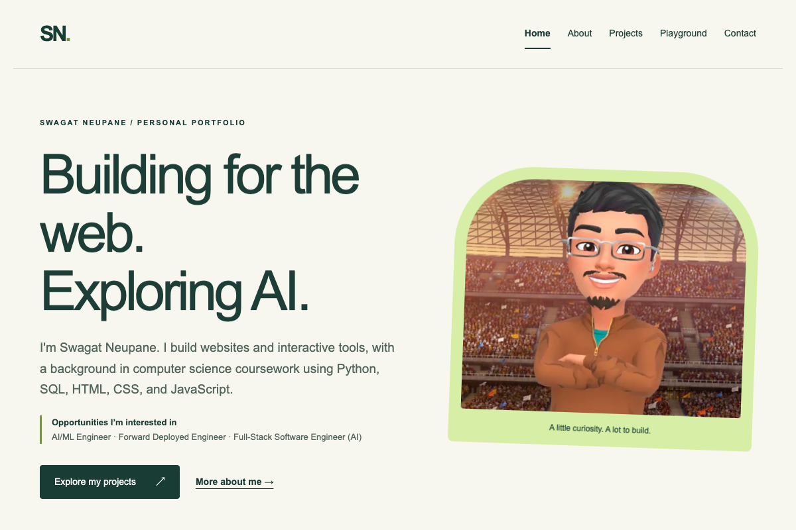

PROJECT NOTES / PORTFOLIO
A clearer home for the work.
A responsive portfolio with consistent navigation and direct paths to the projects.

The problem
The original pages used conflicting shared styles and generic project descriptions. The contact form pointed to a missing server file.
The approach
The redesign uses one shared stylesheet, a consistent navigation bar, semantic page sections, project case studies, and a direct email contact link.
The challenge
Maintain a simple static site while keeping navigation, readability, and layout consistent across desktop and mobile. Content stays accessible without a frontend build system.
The outcome
The main pages share a coherent design, every showcased demo has a direct link, and GitHub Pages publishes the site from the main branch.
Scope & next steps
There is no contact-message backend or claim of message delivery. The email link opens the visitor’s own email application.